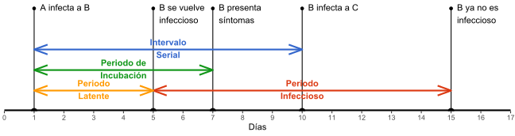

Actualizado: 22 de marzo, 12 AM
En vista de la emergencia en curso causada por el SARS-CoV-2 se presenta una caracterización de la epidemia en Ecuador. Se ha aplicado una metodología sugerida por el R Epidemics Consortium RECON que permite estimar tempranamente el ritmo reproductivo del virus; esta metodología requiere poseer información sobre la transmisión, y datos de la incidencia. La información requerida contempla los siguientes conceptos:
El ritmo reproductivo básico (Basic Reproduction Number, R0) es el número esperado de casos nuevos, generados directamente por un determinado caso en una población completamente susceptible; es crucial entender que R0 no es una constante biológica de un patógeno, pues es afectado por factores ambientales y conductuales.
El intervalo serial (Serial Interval, SI) es el tiempo transcurrido entre casos sucesivos en una misma cadena de transmisión; es posible caracterizar al SI con una distribución Gamma, conociendo su media y desviación estándar en días; no confundir el SI con:
El periodo de incubación, entre una infección y la aparición de sus síntomas.
El periodo latente, entre una infección y el comienzo del periodo infeccioso.
En el periodo infeccioso, una persona infectada puede causar nuevas infecciones.
Si las infecciones ocurren aleatoriamente, se espera que el SI promedio sea igual a la suma del periodo latente promedio y la mitad del periodo infeccioso promedio. Por otra parte, el periodo latente no siempre es mayor que el de incubación: dependiendo del virus, una persona puede volverse infecciosa antes de presentar síntomas. En el caso del SARS-CoV-2, se halló que su periodo de incubación posee una mediana de siete días (Jiang et al. 2020), pero el periodo infeccioso puede comenzar un día antes. Este gráfico (que no representa necesariamente un caso de SARS-CoV-2) permite visualizar la relación existente entre los conceptos mencionados:

Con respecto a los datos, se ha recopilado los reportes publicados por el Servicio Nacional de Gestión de Riesgos SNGRE; casos anteriores al primer reporte corresponden a comunicados del Ministerio de Salud Pública MSP.
| Fuente | Fecha de corte | Casos positivos | Personas fallecidas |
|---|---|---|---|
| Riesgos_Ec | 22 de marzo, 10 AM | 789 | 14 |
| Riesgos_Ec | 21 de marzo, 10 AM | 506 | 7 |
| Riesgos_Ec | 20 de marzo, 10 AM | 367 | 5 |
| Riesgos_Ec | 19 de marzo, 8 AM | 199 | 3 |
| Riesgos_Ec | 18 de marzo, 5 AM | 155 | 2 |
| Riesgos_Ec | 17 de marzo, 8 AM | 111 | 2 |
| Riesgos_Ec | 16 de marzo, 9 AM | 58 | 2 |
| Riesgos_Ec | 15 de marzo, 9 AM | 37 | 2 |
| Riesgos_Ec | 14 de marzo, 3 PM | 28 | 2 |
| Riesgos_Ec | 13 de marzo, 3 PM | 23 | 1 |
| Salud_Ec | 12 de marzo, 6 PM | 19 | 0 |
| Salud_Ec | 10 de marzo, 4 PM | 17 | 0 |
| Salud_Ec | 8 de marzo, 9 PM | 15 | 0 |
| Salud_Ec | 6 de marzo, 8 PM | 14 | 0 |
| Salud_Ec | 5 de marzo, 9 AM | 13 | 0 |
| Salud_Ec | 4 de marzo, 10 AM | 10 | 0 |
| Salud_Ec | 2 de marzo, 10 PM | 7 | 0 |
| Salud_Ec | 1 de marzo, 11 PM | 6 | 0 |
| Salud_Ec | 29 de febrero, 10 AM | 1 | 0 |
Los datos completos, incluyendo los casos descartados y algunos reportes omitidos (en los días con dos reportes se escogió el matutino), se encuentran aquí. El primer paso para estimar R0 consiste en transformar los casos positivos acumulados en incidencia diaria:
EC_COVID19$corte = as.Date(EC_COVID19$corte)
EC_COVID19$positivo = diff(c(0, EC_COVID19$positivo))
EC_incid = rep(EC_COVID19$corte, EC_COVID19$positivo)
table(EC_incid)## EC_incid
## 2020-02-29 2020-03-02 2020-03-03 2020-03-04 2020-03-05 2020-03-07 2020-03-09
## 1 5 1 3 3 1 1
## 2020-03-10 2020-03-12 2020-03-13 2020-03-14 2020-03-15 2020-03-16 2020-03-17
## 2 2 4 5 9 21 53
## 2020-03-18 2020-03-19 2020-03-20 2020-03-21 2020-03-22
## 44 44 168 139 283A continuación es posible ajustar un modelo logarítmico para la incidencia en el tiempo utilizando el paquete incidence:
library(incidence)
EC_incid = incidence(EC_incid)
EC_model = fit(EC_incid[8:nrow(EC_incid)]) # excluyendo primera semana
EC_model$model##
## Call:
## stats::lm(formula = log(counts) ~ dates.x, data = df)
##
## Coefficients:
## (Intercept) dates.x
## -0.9479 0.4110En el caso de Ecuador, el comportamiento logarítmico (R2 = 0.9522) es observable una semana después de la detección del primer caso. De acuerdo a este modelo se espera que cada 1.69 días se dupliquen los casos; esto, con un intervalo de confianza (CI) al 95 % de 1.48 a 1.96 días. En el siguiente gráfico las columnas rojas representan la incidencia diaria, la curva el modelo logarítmico -las líneas entrecortadas delimitan el 95 % CI- y la recta amarilla el inicio del estado de excepción, decretado para frenar las transmisiones.
Figure 1: Incidencia diaria de COVID-19 en Ecuador y modelo logarítmico ajustado
La estimación de R0 con earlyR requiere conocer el SI del COVID-19; en este sentido, la literatura reciente presenta dos alternativas. La primera, aprovechar el conocimiento de epidemias anteriores; Zhao, Lin, et al. (2020) proponen promediar las características del MERS (mean = 7.6, sd = 3.4) y del SARS (mean = 8.4, sd = 3.8), síndromes causados por otros coronavirus. La segunda alternativa consiste en estimar el SI utilizando las pocas cadenas de transmisión ya identificadas (Zhao, Gao, et al. 2020; Nishiura, Linton, and Akhmetzhanov 2020); de esta manera se obtiene un SI preliminar, pero propio del SARS-CoV-2. Con estos antecedentes, se estimó R_viruses y R_chains usando la primera y segunda alternativa, respectivamente; los siguientes histogramas presentan la distribución de R0 en ambos casos.
library(earlyR)
R_viruses = get_R(EC_incid, si_mean = 8, si_sd = 3.6, max_R = 6) # según Zhao, Lin et al.
R_chains = get_R(EC_incid, si_mean = 4.4, si_sd = 3, max_R = 6) # según Zhao, Gao et al.
par(mfrow = c(1,2), mar = c(4,5,1,1))
hist(sample_R(R_viruses, 1e3), freq = FALSE, main = NULL, xlab = "R_viruses")
hist(sample_R(R_chains, 1e3), freq = FALSE, main = NULL, xlab = "R_chains")Figure 2: Distribución de Ro del COVID-19 según SI de otros coronavirus 👈 y de cadenas de transmisión estudiadas 👉
La primera alternativa arroja 4.7207 como el valor más probable; es posible considerar este valor una sobrestimación de R0 según lo observado en estudios recientes. Mientras tanto, la segunda alternativa estima un R0 = 2.0841 (95 % CI: 1.9459 - 2.2342); un valor congruente con los estudios, donde se ha observado que el SARS-CoV-2 posee un SI más corto que otros coronavirus. Por ende, aun con un ritmo reproductivo menor, puede generar más casos.
Considerando R0 se puede modelar una proyección futura, más flexible que la arrojada por el modelo exponencial solamente. Se ha utilizado projections para predecir tres escenarios, calculando en cada uno diez mil simulaciones para cada día de las dos próximas semanas.
library(projections)
EC_proj = project(EC_incid, R_sample, R_chains$si, n_days = 14, n_sim = 1e4)
rowMeans(EC_proj)## 2020-03-23 2020-03-24 2020-03-25 2020-03-26 2020-03-27 2020-03-28 2020-03-29
## 222.9667 281.0238 344.1267 417.3118 503.9178 609.0908 735.8126
## 2020-03-30 2020-03-31 2020-04-01 2020-04-02 2020-04-03 2020-04-04 2020-04-05
## 887.5471 1072.2918 1294.5923 1563.9690 1889.7482 2279.6449 2754.6759Estos datos representan la incidencia promedio para cada día, en un primer escenario donde R0 no cambia en absoluto. Los casos actuales y la proyección futura -la región sombreada delimita el 95 % CI- se presentan en el siguiente gráfico de manera acumulativa:
EC_incid = cumulate(EC_incid)
EC_proj = cumulate(EC_proj)
add_projections(plot(EC_incid), EC_proj + max(EC_incid$counts), c(.025, .5)) +
geom_vline(xintercept = as.Date("2020-03-17"), col = "gold", alpha = .6, size = 2) +
scale_x_date(date_breaks = "4 days", date_labels = "%b %e") +
scale_y_continuous("Incidencia diaria acumulada", 2000 * 0:9) +
scale_fill_manual(values = "firebrick")Figure 3: Proyección de incidencia diaria acumulada de COVID-19 en Ecuador si R0 = 2.0841
El segundo y tercer escenarios calculados suponen que R0 se reduce a la mitad (figura 4) y a la quinta parte (figura 5), respectivamente:

Figure 4: Proyección de incidencia diaria acumulada de COVID-19 en Ecuador si R0 = 1.042
Figure 5: Proyección de incidencia diaria acumulada de COVID-19 en Ecuador si R0 = 0.4168
Evidentemente, si R0 < 1 la epidemia será controlada eventualmente. Sin embargo, estas proyecciones no son realistas pues cualquier cambio introducido en R0 -a través de medidas políticas, sociales y sanitarias- no se refleja inmediatamente; en Ecuador es necesario contar las infecciones previas a la declaración de estado de excepción, y que aún no han superado el periodo de incubación. Se pretende actualizar este post conforme las incidencias diarias sean reportadas y reflejen, con optimismo, las medidas adoptadas.
Referencias
Jiang, Xue, Yawei Niu, Xiong Li, Lin Li, Wenxiang Cai, Yucan Chen, Bo Liao, and Edwin Wang. 2020. “Is a 14-Day Quarantine Period Optimal for Effectively Controlling Coronavirus Disease 2019 (Covid-19)? (Preprint).” https://doi.org/10.1101/2020.03.15.20036533.
Nishiura, Hiroshi, Natalie Linton, and Andrei Akhmetzhanov. 2020. “Serial Interval of Novel Coronavirus (Covid-19) Infections (Preprint).” https://doi.org/10.1016/j.ijid.2020.02.060.
Zhao, Shi, Daozhou Gao, Zian Zhuang, Ka Chong, Yongli Cai, Jinjun Ran, Peihua Cao, et al. 2020. “Estimating the Serial Interval of the Novel Coronavirus Disease (Covid-19): A Statistical Analysis Using the Public Data in Hong Kong from January 16 to February 15, 2020 (Preprint).” https://doi.org/10.1101/2020.02.21.20026559.
Zhao, Shi, Qianyin Lin, Jinjun Ran, Salihu Musa, Guangpu Yang, Weiming Wang, Yijun Lou, et al. 2020. “Preliminary Estimation of the Basic Reproduction Number of Novel Coronavirus (2019-nCoV) in China, from 2019 to 2020: A Data-Driven Analysis in the Early Phase of the Outbreak.” International Journal of Infectious Diseases 92 (January). https://doi.org/10.1016/j.ijid.2020.01.050.